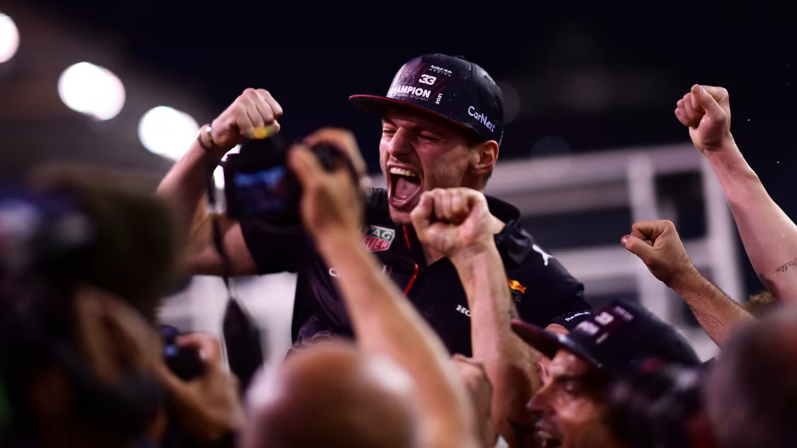
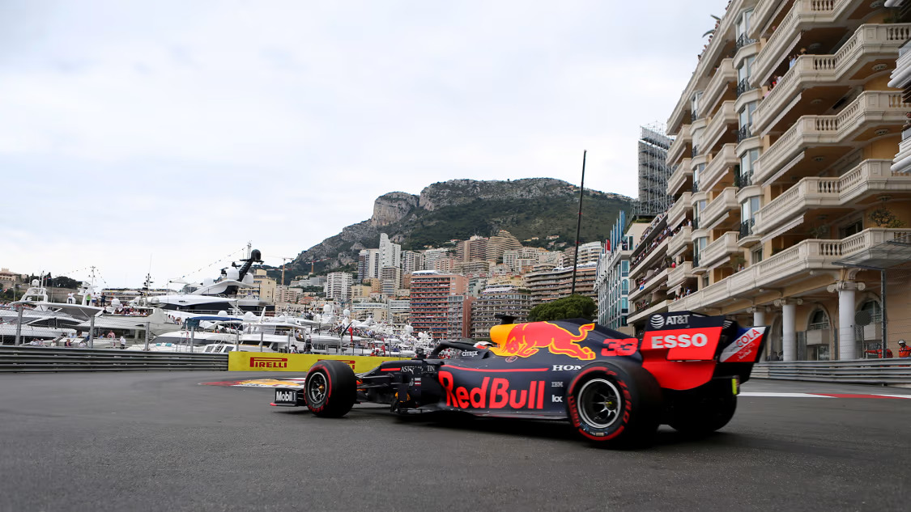
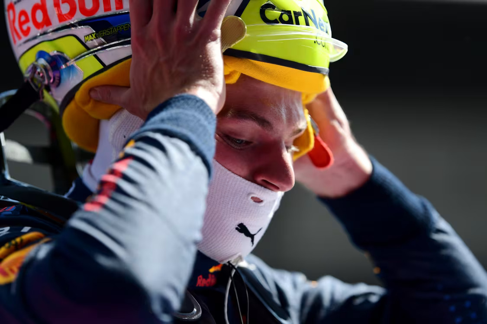
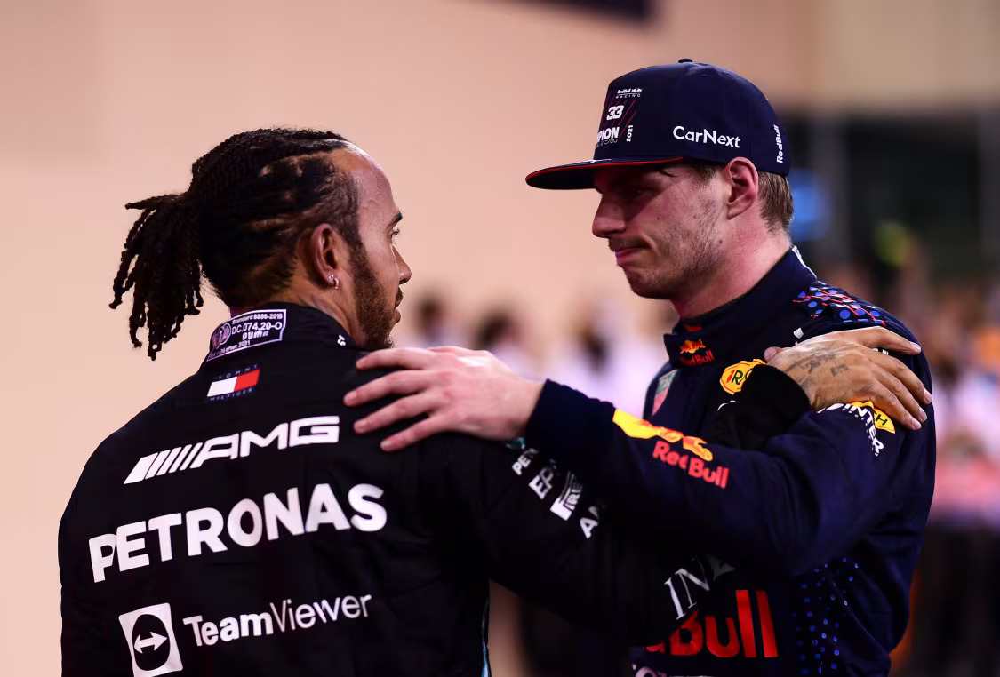
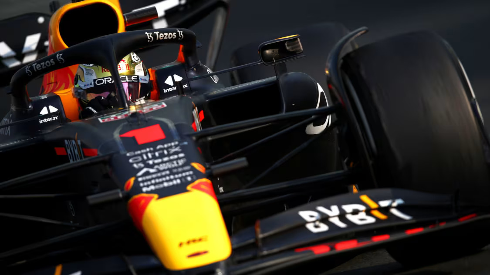
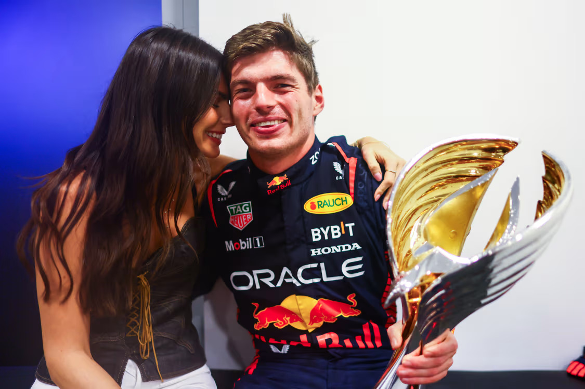

Max Verstappen - 2021 - 2023
In 2021 24-year-old Max Verstappen became the 34th Formula 1 World Champion, taking the title from seven-time champion Lewis Hamilton amid controversy on the last lap of the last race. Driving on the limit – sometimes over it – their intense rivalry became a personal feud that pushed them far beyond the rest of the field. The enthralling battle between the ultra-confident Dutch youngster and the most successful driver in the sport’s history captured the imagination of a worldwide audience as never before.

Max Verstappen is a Dutch Formula 1 racing driver who has become one of the most dominant and influential figures in the sport. Born on September 30, 1997, in Hasselt, Belgium, Verstappen was destined for a career in motorsport. His father, Jos Verstappen, was a former Formula 1 driver, and his mother, Sophie Kumpen, was a successful karting champion. Max’s early exposure to racing, coupled with the guidance of his father, who managed his career, set the foundation for his rapid rise through the motorsport ranks. By the age of four, Max was already karting, and it quickly became clear that he possessed an extraordinary talent for racing.
Verstappen’s journey through the junior categories was nothing short of spectacular. He dominated the karting scene, winning multiple championships, including the KF3 World Cup and the WSK Euro Series. In 2014, at just 16 years old, Verstappen made the leap to single-seaters, competing in the FIA European Formula 3 Championship. Despite being a rookie, he won 10 races and finished third in the championship, attracting the attention of several Formula 1 teams. His exceptional performances led to a contract with Scuderia Toro Rosso (now Scuderia AlphaTauri) for the 2015 Formula 1 season, making him the youngest driver in Formula 1 history at the age of 17.
Verstappen’s debut season in Formula 1 was remarkable. Despite his lack of experience, he consistently outperformed expectations, showcasing his raw speed and fearless overtaking abilities. His performances earned him the FIA Rookie of the Year award, and it became evident that he was a future star of the sport. In 2016, after just four races with Toro Rosso, Verstappen was promoted to Red Bull Racing, replacing Daniil Kvyat. The decision proved to be a masterstroke, as Verstappen won his first race with Red Bull at the Spanish Grand Prix, becoming the youngest race winner in Formula 1 history at 18 years old.
Verstappen’s victory in Spain marked the beginning of a new era for Red Bull Racing and for Verstappen himself. Over the next few seasons, he continued to impress with his aggressive driving style, racecraft, and ability to extract the maximum performance from his car. Despite being one of the youngest drivers on the grid, Verstappen established himself as a regular podium finisher and a serious contender in the championship. His rivalry with established stars like Lewis Hamilton and Sebastian Vettel added an extra layer of excitement to the sport, as fans eagerly watched the emergence of a new generation of talent.
By 2019, Verstappen had firmly established himself as Red Bull’s leading driver. His consistency and maturity on track improved significantly, and he began to challenge for race wins more regularly. That year, he secured three victories, including a memorable win at the Brazilian Grand Prix, where he outdueled Lewis Hamilton and other top drivers in a thrilling race. Verstappen finished third in the championship standings, signaling his readiness to challenge for the title in the coming years. His growing popularity and impressive performances also helped to increase Formula 1’s fan base, particularly in the Netherlands, where he became a national hero.
The 2020 season saw Verstappen continue to develop as a driver, but it was in 2021 that he truly came into his own. In what would become one of the most fiercely contested seasons in Formula 1 history, Verstappen went head-to-head with Lewis Hamilton for the World Championship. The season was marked by numerous on-track battles, controversial incidents, and dramatic moments that kept fans on the edge of their seats. Verstappen’s relentless pursuit of victory, combined with Red Bull’s competitiveness, saw him win 10 races and secure multiple pole positions.
The 2021 Abu Dhabi Grand Prix, the final race of the season, will go down as one of the most dramatic and controversial races in Formula 1 history. Verstappen entered the race level on points with Hamilton, setting the stage for a winner-takes-all showdown. In a dramatic final lap, following a safety car period, Verstappen overtook Hamilton to win the race and claim his first World Championship. The race was marred by controversy over race control decisions, but Verstappen’s victory was nonetheless a testament to his skill, determination, and never-give-up attitude. At just 24 years old, he became the first Dutch driver to win the Formula 1 World Championship.
Following his 2021 championship victory, Verstappen entered the 2022 season with even greater confidence and determination. Red Bull Racing provided him with a highly competitive car, and Verstappen seized the opportunity to dominate the season. He won 15 of the 22 races, breaking the record for the most wins in a single season, and secured his second consecutive World Championship with several races to spare. Verstappen’s ability to consistently perform at such a high level, combined with his aggressive yet calculated approach, solidified his status as one of the sport’s greats.
The 2023 season further demonstrated Verstappen’s dominance in Formula 1. With Red Bull continuing to provide a car capable of winning races, Verstappen maintained his relentless form, securing his third consecutive World Championship. His rivalry with Lewis Hamilton persisted, but Verstappen’s consistency, coupled with his team’s strategic acumen, made him nearly unbeatable. By this point, Verstappen had firmly established himself as the benchmark in Formula 1, with many considering him the successor to legends like Michael Schumacher and Ayrton Senna.
Verstappen’s driving style is characterized by his aggressive approach, particularly when overtaking, and his exceptional car control. He is known for his fearlessness in wheel-to-wheel combat, often making daring moves that leave fans and commentators in awe. However, his driving has also sparked debate and controversy, with some critics questioning his on-track behavior, particularly in close racing situations. Despite this, Verstappen’s talent is undeniable, and his ability to extract every ounce of performance from his car is a key reason for his success.
Off the track, Verstappen is known for his straightforward and no-nonsense personality. He is often described as fiercely competitive, with a single-minded focus on winning. Unlike many of his peers, Verstappen tends to avoid the spotlight outside of racing, preferring to keep his private life relatively low-key. His relationship with his father, Jos, remains a significant influence on his career, with Jos playing an active role in managing and advising Max. Despite the pressures of being at the top of the sport, Verstappen remains grounded and committed to his craft, always striving to improve and push the limits.
Looking ahead, Max Verstappen’s future in Formula 1 appears to be incredibly bright. At such a young age, he has already achieved so much, and there is little doubt that he has the potential to break even more records in the years to come. With Red Bull Racing continuing to support him with competitive machinery, and with his skills only getting sharper, Verstappen is poised to be a dominant force in the sport for many seasons. Whether he will continue to add to his World Championship tally or inspire the next generation of drivers, Max Verstappen’s legacy in Formula 1 is already assured.